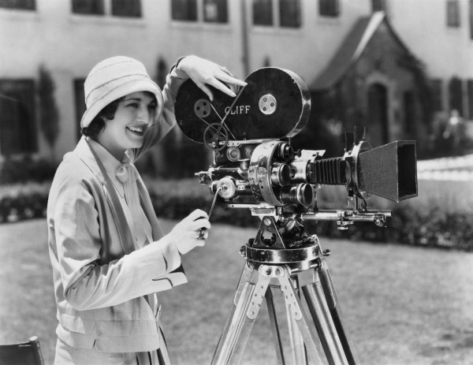

¿QUE ES LA CINEMATOGRAFIA?

Es la técnica y el arte de capturar, almacenar y retransmitir imágenes en movimiento, a menudo provistas de un soporte auditivo. Este proceso se lleva a cabo normalmente con una cámara de video (o algún soporte semejante, como los celulares inteligentes) y se encuentra muy relacionado con la fotografía, tanto técnica como creativamente. El cine puede ser entendido como una forma de transformar el teatro en algo cristalizado, algo que queda perpetuamente registrado en una cinta de vídeo.
El cine se considera como séptimo arte, algo asignado por Riccioto Canudo en su obra “Manifiesto de las Siete Artes" publicada en 1911. Esta sería la primera vez que se definiría al cine como tal, un concepto que se asentará y llegará hasta nuestros días como sinónimo de la gran pantalla.
CARACTERISTICAS
El proceso de creación requiere de tecnología especializada, lo que la convierte en un producto de factura industrial.
Heredera, a su vez, de los valores plásticos de la pintura occidental (composición del plano, uso de la perspectiva, estudio de la iluminación, etc.)
Integra también elementos de otras artes, tales como la literatura (tipos de narración), el teatro (vestuario, escenografía, representación escénica), el sonido y la música.
Ha desarrollado un lenguaje propio que la distingue de otras artes visuales, con base en la técnica del montaje
ELEMENTOS

Entre los elementos que caracterizan la especificidad del lenguaje cinematográfico podemos mencionar los siguientes:
- Encuadre: se refiere a la delimitación del cuadro. El encuadre determina qué debe quedar dentro o fuera del "marco". Cada encuadre parte de un ángulo.
- Ángulo: un ángulo de un encuadre puede ser:
- Normal: la cámara se sitúa frente al objeto.
- Picado: la cámara se sitúa por encima del objeto.
- Contrapicado: la cámara se sitúa a los pies del objeto.
- Cenital: la cámara, totalmente perpendicular al suelo, ofrece una toma aérea del objeto.
- Plano: es la unidad básica del lenguaje cinematográfico. Puede ser de varios tipos. A saber:
- Gran plano general (GPG)
- Plano general (PG)
- Plano medio largo (PML)
- Plano medio corto (PMC)
- Plano medio corto (PMC)
- Plano americano (PA)
- Primer plano (PP)
- Primer primerísimo plano (PPP)
- Plano detalle (PD)
- Movimiento de cámaras: se refiere a los tipos de desplazamiento que realiza la cámara durante la filmación. Pueden ser:
- Movimientos físicos:
- Panorámica: la cámara gira sobre el eje horizontal o vertical.
- Travelling: la cámara se desplaza de su eje.
- Rotación: la cámara gira unos grados sobre su eje, a derecha o izquierda
- Movimientos ópticos:
- Zoom: mediante el objetivo de la cámara, se acercan o alejan los objetos en el plano sin moverla.
- Foco: el lente de la cámara permite alternar el foco de un mismo plano.
- Montaje: por montaje se entiende la combinación de los diferentes planos tomados en una filmación, cuya concatenación (siempre en el proceso de edición) permite la construcción de una escena y la formación de un punto de vista y un discurso. Este es el elemento más característico del lenguaje cinematográfico.
- Iluminación.
- Tono y color.
- Ritmo.
- Sonido.